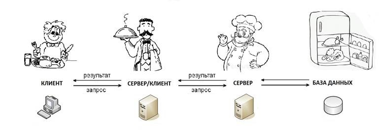

Representational State Transfer или сокращенно – что это такое? В интернете полно статей на разных языках. Но многие трактовки этого понятия противоречат друг другу. Как же докопаться до сути?
Мне кажется, самый простой способ – разбить любое сложное понятие на составляющие, эти составляющие – на их составляющие, пока не дойдем до основы.
Еще один неплохой вариант – изучить доступную информацию, даже если она противоречит друг другу. Когда мы изучим несколько точек зрения, можно их сравнить, проанализировать, выявить наиболее понравившуюся и дальше придерживаться её.
Для этого придется разобрать несколько примеров. Без них никуда.
Пускай точка зрения, описанная в этой статье, будет дополнением к тем знаниям, которые Вы уже изучили, или только собираетесь. Я буду использовать как можно меньше технических терминов – о них и без этого достаточно написано. Здесь я постараюсь изложить свое видение основных концепций, связанных с REST, на простых примерах. В дальнейшем при изучении технической документации процесс понимания сложных вещей будет немного проще. И если сейчас что-то останется непонятным, всё прояснится в дальнейшем, при изучении REST уже на реальных примерах.
Самое распространенное и ключевое понятие REST – это стиль. Стиль взаимодействия распределённого web-приложения (или сложного, составного приложения).
Давайте немного поговорим о самом web-приложении и том, где оно распределено. В обычной жизни приложением для нас является программа, скачанная на телефон или планшет; программа на рабочем компьютере. Некоторые web-сайты в интернете сейчас всё чаще называют web-версией приложения. Получается, что web-приложение – это приложение на телефоне, планшете или сайт в интернете? Да, но зачастую это всего лишь часть одного большого приложения, состоящего из нескольких таких частей.
Давайте разберем это на простом примере. Предположим, Вы захотели узнать погоду. Вы скачали приложение на телефон, выбрали свой город и посмотрели погоду на неделю вперед. Обыденная ситуация, но мало кто задумывается, что для того, чтобы это стало возможным, пришлось построить сложную систему из элементов, взаимодействующих между собой, – то самое сложное приложение, распределённое по сети. Приложение, скачанное на телефон, или сайт, на котором Вы узнаете погоду, – это так называемая клиентская часть приложения, представляющая из себя красивую оболочку для отображения данных.
Сами данные берутся из скрытой от пользователя части приложения, которую называют серверной. Вся обработка и хранение информации происходит там. Серверная часть приложения также может делиться на части, состоять из нескольких приложений (серверов). Именно поэтому распределённое web-приложение и называют сложным. А распределённым оно считается, потому что территориально его компоненты могут находиться в абсолютно разных местах.
Со сложным распределённым приложением немного разобрались. Теперь давайте разбираться со стилем REST. Существует стиль в одежде, архитектурный стиль, музыкальный стиль и так далее. И что между всем этим общего? В любом стиле есть свои правила соответствия, и совокупность этих правил называют стилем. Получается, что и REST – это совокупность правил организации взаимодействия тех самых компонентов распределённого приложения, о которых мы говорили выше. Что-то вроде кодекса, написанного разработчиками для разработчиков.
Кодекс — это свод правил, а не жестких законов! Г. Барбоса
Отлично, с терминами мы познакомились. Осталось понять, что это за правила.
Представьте себе, что Вы приходите в ресторан, садитесь за столик и готовитесь сделать заказ. К Вам подходит официант, и Вы сообщаете ему, что на горячее Вы будете индейку в сливочном соусе, на десерт пирожное с черносливом, а пить вы будете лимонный компот. Неплохой выбор! Официант внимательно выслушивает Вас и удаляется на кухню. Там он, в свою очередь, передаёт повару, что тот должен приготовить для Вас жаркое из индейки, пирожное с черносливом и компот.
Спустя какое-то время, официант возвращается к Вам и приносит блюда.
Всё это здорово, но при чём здесь REST? Давайте рассмотрим эту ситуацию, как будто Вы воспользовались приложением (сложным приложением), разработанным по всем канонам REST (далее мы будем называть его REST-системой).
Вы хотите что-то получить от официанта. Назовем это что-то «ресурс». Для этого вы обращаетесь к нему, запрашивая этот ресурс. Другими словами, делаете запрос. Если вы запрашиваете у официанта этот ресурс, значит, он у него есть. В системе REST тот, кто запрашивает ресурс, называется клиентом, а тот, кто имеет этот ресурс, называется сервером.
Получается, Вы являетесь клиентом, официант – сервером. Вы передаете ему запрос, в котором указываете, какую еду хотели бы сегодня отведать (получить в ответ). Представим сам запрос в следующем формате:
{
"горячее": "индейка в сливочном соусе",
"десерт": "пирожное с черносливом",
"напиток": "лимонный компот"
}
Так гораздо лучше. Передавать запрос Вы будете по url-адресу:
http://ресторан/официант/заказ
Отлично! Теперь давайте коснёмся методов передачи запросов. Методом является одно ключевое слово в начале запроса, которое указывает, какое действие с желаемым ресурсом Вы бы хотели произвести. В данном случае, т.к. вы ещё и сами передаёте какую-то информацию, методом передачи запроса будет метод POST. Подробнее о методах запроса мы поговорим чуть позже. А пока имеем запрос такого вида:
Адрес: http://ресторан/официант/заказ;
Метод: POST;
Тело запроса:
{
"горячее": "индейка в сливочном соусе",
"десерт": "пирожное с черносливом",
"напиток": "лимонный компот"
}
Официант обрабатывает данные и передаёт их повару также в виде запроса. Теперь уже официант берёт на себя роль клиента, а повар является сервером. Давайте представим это в виде наглядной схемы.

Как мы видим, на схеме есть клиенты и есть серверы. Тут сразу же стоит отметить, что речь идёт о ролях компонентов системы, обращающихся друг к другу. Ни в коем случае нельзя отождествлять понятия клиента и сервера с клиентской и серверной частью приложения. В данном случае клиентской частью будет только посетитель ресторана (крайний левый клиент). Все что правее – серверная часть.
Вот так выглядит схема работы приложения, построенного по принципу клиент-серверной архитектуры. А мы с вами имеем первое правило организации REST, это клиент-сервер. Есть клиент, есть сервер. Они взаимодействуют между собой путём отправки запроса и получения ответа.
Наверное, Вы заметили, что на схеме присутствует еще и база данных. В сложных приложениях так называют хранилище данных. Перед тем, как начать готовить еду, повар должен заглянуть в холодильник и убедиться, что у него есть все необходимые продукты. Тут холодильник будет являться базой данных, и только повар может взаимодействовать с ней. Мы подошли ко второму правилу REST – многослойная архитектура.
Могло оказаться так, что в холодильнике не оказалось бы нужных продуктов. Тогда повар на запрос официанта вернул бы вместо готового блюда свои сожаления, которые официант, в свою очередь, передал бы Вам. Ему бы пришлось предложить что-нибудь другое, чтобы Вы остались и сделали новый заказ. Причем, заметьте, клиент может взаимодействовать только со своим сервером, а сервер со своим клиентом. Повар не выйдет к Вам в гостевой зал и не сообщит информацию лично. И его абсолютно не волнует, как дальше пойдет Ваше взаимодействие с официантом. Продуктов нет, и всё тут. В этом и заключается такая особенность REST как слоистая архитектура.
Всё-таки предположим, что сегодня всё сложилось удачно, нужные продукты оказались в холодильнике (базе данных), и официант вернул Вам положительный ответ в виде горячего и компота, а не сожалений. Тут вроде бы все понятно, идем дальше.
Теперь давайте подробнее разберемся с нашими запросами, а точнее, с методами их передачи. Придется немного пофантазировать.
Вы остались довольны трапезой и решили вернуться в это заведение в следующий выходной. Неделя пролетела очень быстро, и вот Вы снова сидите за столиком. А номер Вашего столика, предположим, – 4. Почему бы и нет? К Вам подходит официант, и Вы делаете заказ. Снова представим его в виде запроса:
Адрес: http://ресторан/официант/заказ;
Метод: POST;
Тело запроса:
{
"горячее": "индейка в сливочном соусе",
"десерт": "пирожное с черносливом",
"напиток": "лимонный компот"
};
Теперь давайте более детально проанализируем, что происходит дальше. Официант принимает Ваш запрос и формирует новый запрос для отправки дальше – повару. Этот запрос уже будет выглядеть следующим образом:
Адрес: http://ресторан/повар/заказы;
Метод: POST;
Тело запроса:
{
"заказ для": "столик №4",
"заказ":
{
"горячее": "индейка в сливочном соусе",
"десерт": "пирожное с черносливом",
"напиток": "лимонный компот"
};
};
Особо внимательный читатель заметит, что в конце адреса, по которому передаёт свой запрос официант, «заказы» указаны во множественном числе. Это и правильно, ведь посетителей ресторана много, как и заказов. Но как официанту с поваром ориентироваться в этом многообразии? Для этого в запросе официанта добавился еще и номер Вашего столика. Это поле будет неким идентификатором или ID заказа. После чего будет создан некий ресурс (заказ), доступный по адресу:
http://ресторан/повар/заказы/заказ_для_столика_№4
Теперь все дальнейшие манипуляции с заказом будут происходить именно по этому адресу.
Пока официант был на кухне, передавая данные повару, Вы вспоминаете, что один приятель рассказывал про чудесный суп с грибами, который подают в этом ресторане. Как только в следующий раз официант попадает в поле зрения, Вы подзываете его к себе и сообщаете, что хотели бы добавить суп к заказу. Тут переданный Вами запрос будет иметь следующий вид:
Адрес: http://ресторан/официант/заказ;
Метод: PATCH;
Тело запроса:
{
"первое блюдо": "грибной суп"
};
Метод этого запроса будет выглядеть как PATCH. Теперь будет понятно, что к уже имеющемуся заказу нужно добавить первое блюдо. Следующим действием официант должен донести до повара информацию о том, что Вам нужно приготовить суп. Как это сделать? Конечно же, отправить запрос. На этот раз он будет иметь следующий вид:
Адрес: http://ресторан/повар/заказы/заказ_для_столика_№4;
Метод: PATCH;
Тело запроса:
{
"первое блюдо": "грибной суп",
};
Адрес отправки запроса будет следующий:
http://ресторан/повар/заказы/заказ_для_столика_№4
Вот для чего нам нужен был ID заказа. Когда официант будет передавать данные повару, ему будет понятно, что речь идёт об уже имеющемся заказе для столика №4.
Отлично, теперь повар поймет, что ему нужно приготовить суп и отдать его официанту, обслуживающему столик №4.
Повар приступил к приготовлению, но Вы немного поразмыслили и поняли, что грибной суп — это не совсем то, чего бы Вам сегодня хотелось. Что с гораздо большем аппетитом Вы бы съели суп с говядиной. И, пожалуй, при таком раскладе пирожное с черносливом уже не поместится в желудке. Придётся опять изменять заказ. Не беда, в этом заведении Вы можете себе такое позволить. Легкий взмах рукой, и официант готов выслушать новые пожелания. В этой ситуации придется сделать два запроса.
Первый – методом PATCH для изменения первого блюда:
Адрес: http://ресторан/официант/заказ;
Метод: PATCH;
Тело запроса:
{
"первое блюдо": "суп с говядиной"
};
Второй – еще не знакомым нам методом DELETE для отмены десерта:
Адрес: http://ресторан/официант/заказ;
Метод: DELETE;
Тело запроса:
{
"десерт": "пирожное с черносливом"
};
Отлично, Вы отказались от десерта, и перезаказали суп. Теперь Вы точно останетесь довольны ужином.
Официант же спешит на кухню сообщить повару, чтобы тот не торопился класть в суп грибы. Там он передаст повару два запроса:
Первый:
Адрес: http://ресторан/повар/заказы/заказ_для_столика_№4;
Метод: PATCH;
Тело запроса:
{
"первое блюдо": "суп с говядиной"
};
Второй:
Адрес: http://ресторан/повар/заказы/заказ_для_столика_№4;
Метод: DELETE;
Тело запроса:
{
"десерт": "пирожное с черносливом"
};
Но есть и альтернативный вариант. Тут-то и появляется на сцене новый метод – PUT. Метод PUT может целиком заменить уже имеющийся ресурс. В нашем случае речь идёт о заказе.
И так, официант обращается по адресу:
http://ресторан/повар/заказы/заказ_для_столика_№4;
И методом PUT передаёт запрос:
{
"первое блюдо": "суп с говядиной",
"горячее": "индейка в сливочном соусе",
"напиток": "лимонный компот"
};
Отлично. Старый заказ будет удален, а вместо него появится новый. Теперь повар поймет, что для столика №4 ему не нужно готовить пирожное. А вместо шампиньонов в суп он положит свежую говядину.
Существует также метод GET, пример с ним мы рассмотрим чуть позже. На самом деле методов запросов гораздо больше. Мы рассмотрели только самые основные.
Что ж, и в этот раз все блюда благополучно были доставлены. Вы остались довольны, и, конечно же, решили вернуться сюда в следующий выходной.
На самом деле, в этой главе мы рассмотрели не только методы передачи запроса, но еще и коснулись одного из самых главных правил REST – это правило единого интерфейса. Оно достойно отдельной главы, поэтому о нём мы поговорим дальше.
Итак, единый интерфейс. В данном случае этим термином можно назвать способ взаимодействия. Получается, дальше речь пойдет о едином способе взаимодействия. Конечно же, всё происходит в контексте REST-взаимодействия компонентов приложения, которыми (как мы уже говорили) являются клиент и сервер.
Что мы имеем теперь? Одно из правил REST – единый интерфейс – это правило единого способа взаимодействия компонентов приложения. А само понятие REST – это совокупность правил организации взаимодействия тех самых компонентов распределённого приложения. Таким образом, одно из набора правил взаимодействия – это правило взаимодействия. Масло масляное. Умозаключение логичное, но никакой смысловой нагрузки пока в себе не несёт. Давайте разбираться.
Вернемся к нашему вежливому официанту. Как мы уже сказали, в совокупности правил взаимодействия REST есть отдельное правило общения, которое так и называется – правило взаимодействия. Официант – компонент системы? Компонент. Значит, и для него применимо это правило. Мы уже коснулись ролей взаимодействия, зон ответственности, но еще не говорили о поведении. Да, единый интерфейс – это что-то вроде правила поведения во время взаимодействия. Как должен вести себя наш официант? Он должен быть учтив, внимателен, вежлив. Он должен знать, кому и что ему можно и нужно говорить. Когда он подойдет к Вашему столику, он предложит Вам сделать заказ. Он не начнет рассказывать о том, как правильно играть в гольф или как готовить круассаны с клубникой. Ему совершенно не важно, кто будет его клиентом. С любым своим клиентом он будет взаимодействовать одинаково учтиво – выслушивать заказ, вежливо отвечать на вопросы, приносить еду и напитки. Так же и с поваром – неважно, для какого столика он будет готовить еду, какой официант принёс ему заказ. Повар будет стараться приготовить одинаково для всех.
В этом и есть прелесть REST. Компоненты REST-системы стандартизированы, их можно легко заменить другими такими же компонентами. Главное, чтобы они знали, как им взаимодействовать друг с другом. Если вдруг посещаемость ресторана будет расти, можно увеличить количество официантов. Правила поведения официантов везде одинаковые. Нужно только показать новенькому, где кухня, и он готов к работе. При этом другие элементы системы затронуты не будут и никакой работы над ними проделывать не нужно.
Представим еще, что наш любимый ресторан стал предлагать такую услугу как «еда на вынос». Тут потребуются новые компоненты – доставщики еды. Они будут общаться с клиентской частью посредством телефонной связи или мессенджеров, но передавать заказ повару они будут абсолютно так же, как и официанты. Отправлять запрос:
Адрес: http://ресторан/повар/заказы;
Метод: POST;
Тело запроса:
{
"заказ для": "доставщик Иван Иванов",
"заказ":
{
"горячее": "индейка в сливочном соусе",
"десерт": "пирожное с черносливом",
"напиток": "лимонный компот"
};
};
Тем самым создавая ресурс:
http://ресторан/повар/заказы/заказ_на_вынос_Иван_Иванов;
Процесс изменения размеров системы называется масштабированием. Масштабирование – это один из неотъемлемых плюсов REST-систем. В любой момент можно легко изменить размеры серверной части в зависимости от потребностей клиента. И во многом это благодаря правилу единого поведения. Замечательное правило! Само оно включает четыре подправила для облегчения работы.
Первое – ресурсоёмкость или ресурсный подход.
Хоть у каждого ресурса и есть свой идентификатор (заказ_для_столика_№4), он должен быть включен в обобщённое понятие (заказы), для того чтобы мы знали, к какой группе ресурсов относится это ресурс.
Второе – манипуляция ресурсами посредством представлений.
Я бы даже сказал, посредством перепредставлений, или, если быть еще точнее, перепредоставлений. В оригинале это правило называется Manipulation of Resources Through Representations. Сама аббревиатура REST - Representational State Transfer. И самое важное тут – понять, что же это за Representations и Representational .
Representations переводится как «представление ». У клиента есть своё представление о ресурсе. Оно может меняться. Как мы помним из нашего примера, мы могли несколько раз изменять свой заказ. Для этого мы озвучивали свое представление того, как должен выглядеть наш заказ официанту, а тот, в свою очередь, повару.
Тогда что же такое Representational? В контексте с REST, пожалуй, можно дать значение этому слову – актуальный или наиболее точный.
Из чего следует, что REST можно перевести как «передача актуального состояния».
Стоит отметить – изменять ресурс может только тот, у кого есть на это право. Официант, обслуживающий столики № 3, 4 и 7 не может прийти к повару и изменить заказ для столика № 1.
Третье – информативные сообщения (абсолютно точные сообщения).
Когда клиент обращается к серверу он должен быть абсолютно точным в своих обращениях.
Если за столиком №3 кто-то закажет моккачино, официант не должен, придя к повару, крикнуть ему: «Мне моккачино, и побыстрее!». Повар может подумать, что официант устал, хочет выпить кофе и восполнить силы. На скорую руку он сварит не самый лучший в его практике напиток, положит туда побольше кофе, чтобы заряда бодрости официанту хватило на подольше. Да и еще нальет всё это в железную большую кружку, если чистой чашки под рукой не окажется.
Вместо этого официант должен прийти к повару и сказать: «Заказ для третьего столика. Моккачино.» Вот тогда повар правильно поймёт официанта. Приготовит свой лучший напиток и нальет его в чистую фарфоровую чашку.
Четвертое - гипермедиа как движущая сила состояния приложения. Hypermedia as the Engine of Application State, или сокращенно HATEOAS. Об этом правиле мы поговорим чуть позже.
При каждом визите в ресторан Ваше общение с официантом начинается с чистого листа. У Вас не получится сказать ему: «Я буду то же, что и в прошлый раз». Официант не запоминает, кто и что заказывал ранее. Поэтому если Вы захотите повторить свой заказ, придется потратить немного времени и снова озвучить весь список желаемого. Это и будет называться Stateless или отсутствием состояния, что, в свою очередь, является ещё одним правилом REST. Конечно, клиенту не всегда удобно запоминать, что он заказывал в прошлый раз. Да и времени на заказ уйдёт гораздо больше. Но давайте вспомним о том, что официант, обычно обслуживающий Ваш столик, хоть и добросовестный работник, но всё же человек, и может попросту заболеть. И его заменит другой. И вот этот другой официант уже точно не будет помнить, что Вы брали в прошлый раз. Он не станет звонить официанту, который обслуживал Вас ранее, и узнавать о прошлом заказе. Да и телефона может не оказаться под рукой. Гораздо проще и быстрее, если официант просто запишет Ваш заказ и отнесёт повару, согласитесь? А если в следующий Ваш визит и этот официант не выйдет на работу по каким-то причинам, его с лёгкостью заменит любой другой. Это еще один критерий, благодаря которому возможно масштабирование.
Поскольку заказ придется делать по-новой, Вы решили изучить меню. Ваше внимание привлек салат с сельдереем. Подозвав официанта, Вы решили поинтересоваться составом блюда.
Вы снова делаете запрос новым, но уже упоминавшимся методом GET. В этот раз Вы не передаёте никаких данных. Выглядеть это будет примерно так:
Адрес: http://ресторан/официант/составы блюд/салат_с_сельдереем;
Метод: GET
Как видите, здесь нет никакого тела запроса. Мы хотим получить информацию, ничего не передав. А то, о чём мы хотим получить информацию, указываем в адресной строке.
Теперь официанту нужно дать вам ответ в виде рецепта салата. Официант, к сожалению, не знает рецепта. Он удаляется на кухню, чтобы поинтересоваться у повара – из чего же тот готовит салат. Спустя какое-то время официант возвращает Вам ответ:
{
"салат с сельдереем": "курица, сельдерей, перепелиное яйцо, оливковое масло"
}
Такой себе салат, не правда ли? Но о вкусах не спорят. Вы этот салат решили не заказывать, а вот за соседнем столиком кто-то услышал про него и тоже решил поинтересоваться у официанта, что входит в состав. Официант опять удаляется на кухню – он уже забыл рецепт. Ох уж эта рассеянность… Но повар твердо знает, что он кладёт в свой салат, и спустя время официант возвращается к клиенту с рецептом. Салат с сельдереем становится всё популярнее. Теперь уже в другом конце зала кто-то решил его заказать. И официант снова направляется на кухню, чтобы узнать рецепт.
Согласитесь, не самая лучшая ситуация? Какой же может быть выход? Рецепт салата – это неизменяемые данные (или не так часто изменяемые), поэтому официанту было бы неплохо запомнить его. Тогда он сможет озвучивать клиентам рецепт салата мгновенно, не тратя свое время на походы на кухню, да и повара не будет отвлекать.
Запоминание рецепта салата в этой ситуации будет называться кэшированием. Кэширование — это еще одно правило REST.
Отмечаем одну особенность. Кэшировать стоит только те данные, которые точно не изменятся. Если вдруг они поменяются, нужно перезаписать их и в кэше.
Вдруг у повара не окажется курицы, и он решит заменить её рыбой. Согласитесь будет не очень хорошо, ведь официант пообещал Вам салат с курицей.
Теперь давайте вернемся к пропущенному понятию HATEOAS. В любом заведении в ответ на вопрос о составе салата официант сообщает Вам только рецепт, и ничего более. Но в этой статье мы рассматриваем заведение, где взаимодействие компонентов происходит согласно всем правилам REST. И что это будет значить для Вас?
Когда Вы поинтересуетесь у официанта, из чего будет приготовлен салат, он расскажет не только сам рецепт, но и то, какое блюдо Вы можете заказать в дополнение, с каким напитком его лучше попробовать. Кроме того, на выбор он предоставит список блюд, которые Вы могли бы заказать, не окажись этого салата в наличии. Или информацию о тех блюдах, о которых, по мнению официанта, Вам очень важно было бы знать.
Согласно правилу HATEOAS, сервер в ответ на запрос возвращает не только запрошенную информацию или ресурс, но и отсылки к другим ресурсам, чтобы клиент мог в них ориентироваться.
Неплохо, правда? Теперь Вы можете заказать что-то ещё или даже изменить свой заказ. Вроде бы это хорошее правило, но не всегда оно работает во благо. Клиент, получив так много информации, может глубоко задуматься и потратить массу времени на выбор блюд. Поэтому официанту стоит грамотно формулировать свой ответ.
И снова Вы в своем любимом ресторане. В этот раз Вы заказали не жаркое из индейки, а блюдо из дикой куропатки. Особенность этого блюда в том, что его нужно есть с пылу с жару. Как же этого добиться? Ведь пока официант дойдет до повара, пока принесет блюдо Вам. А если в этот момент будет занят обслуживанием другого столика… Пройдет много времени, всё остынет. К счастью, гении кулинарного дела придумали выход – заливать блюдо алкоголем и поджигать. Отличное решение, но идти через весь зал с горящей куропаткой – не самая лучшая ситуация. Хм… А ведь можно просто снабдить официанта всем необходимым, скажем – готовым блюдом, залитым алкоголем, и спичками. Поджечь птицу можно непосредственно в момент подачи, скажем так, на стороне клиента.
Подобным образом и работает последнее правило REST – код по запросу. Допустим, нам нужно выполнить какой-то сценарий на стороне клиента. Не обязательно выполнять его ещё и на сервере, правда? Можно отправить код на клиентскую часть приложения и там выполнить его. Примерно так же, как поджечь куропатку под носом у клиента.
Что ж, мы выяснили, что для организации REST-сервиса необходимо придерживаться следующих шести правил:
• Клиент-серверная архитектура. Вы клиент, официант – сервер. Вы можете обмениваться друг с другом информацией или чем-то еще. Вы – клиентская часть. Официант, повар и холодильник – серверная часть.
• Слоистая архитектура. Клиентов и серверов может быть много. Промежуточные элементы являются как клиентом для своего сервера, так и сервером для своего клиента. Каждый клиент может общаться только со своим сервером, а сервер – только со своим клиентом. Клиент не может общаться с сервером своего сервера. Помните, повар не принесет Вам жаркое лично.
• Единый интерфейс. Способ общения компонентов обозначен определенным стандартом, манерами поведения.
• Никто не хранит состояние. Новый сеанс общения – чистый лист.
• Кэширование. Всё-таки какую-то часто используемую информацию хранить можно.
• Код по запросу. Если нужно выполнить сценарий на стороне клиента, можно предоставить ему для этого все необходимое, пускай выполняет…
Итак, система REST – это распределённое в сети приложение, спроектированное согласно кодексу REST. Хоть кодекс – это не свод жёстких законов, а правила, нарушать их нельзя. Есть только одно не обязательное к исполнению правило – код по запросу.
- Кто еще хочет нарушить кодекс?
Теперь обладая общими представлениями о REST, Вы можете приступить к изучению технической документации по этой теме, чтобы понимать работу системы в реальных ситуациях.